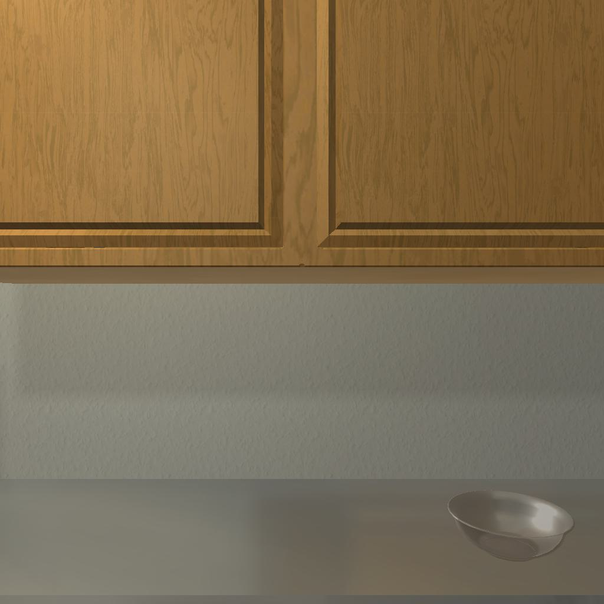

---------------------------------------------------------task: 22---------------------------------------------------------
--------------------------------------------------------------------------------------------------------------------------------------------------------------------
--------------------------------------------------------------------------------------------------------------------------------------------------------------------
Step:--------------------------------------------------------------------------6-------------------------------------------------------------------------------
----------------------------------------
VLM Prompt:
Image1:
Image2:
Image3:
**Instruction**
1. Analyze the provided images to identify all visible household objects and compare the difference between images (e.h. whether the object is opened or not and taken on hand or not), focusing on those relevant to the task description "put a hot egg in countertop."
2. Use the analysis of images and the task hint "The agent must find an object of the desired type, pick it up, go to a microwave, heat the object with the microwave, then find the correct location to place it, and put it down there. The agent does not need to use the microwave button or open the microwave to heat the object, and the agent just needs to do action that is "heat the object with the microwave"." to answer the question: what is the most reasonable action in the choices for the task description "put a hot egg in countertop"?
3. Decide and write the answer using the template: The answer is: (i): , where i is the real number. If there is no desired object in images, search every place based on **Initial Observation** to find the object. And if no one is exactly correct, choose a similar answer.
**Initial Observation**
You are in the middle of a room. Looking quickly around you, you can see cabinet (1-18), countertop (1-4), sink (1), drawer (1-7), sinkbasin (1), coffeemachine (1), microwave (1), garbagecan (1), stoveburner (1-4), toaster (1), fridge (1)
**Answer Choices**
(1): go to cabinet 2
(2): go to countertop 1
(3): go to cabinet 3
(4): go to cabinet 4
(5): go to cabinet 5
(6): go to sink 1
(7): go to cabinet 6
(8): go to drawer 1
(9): go to drawer 2
(10): go to sinkbasin 1
(11): go to cabinet 7
(12): go to cabinet 8
(13): go to coffeemachine 1
(14): go to microwave 1
(15): go to cabinet 9
(16): go to cabinet 10
(17): go to drawer 3
(18): go to drawer 4
(19): go to garbagecan 1
(20): go to drawer 5
(21): go to cabinet 11
(22): go to cabinet 12
(23): go to cabinet 13
(24): go to cabinet 14
(25): go to stoveburner 1
(26): go to countertop 3
(27): go to stoveburner 2
(28): go to stoveburner 3
(29): go to stoveburner 4
(30): go to drawer 6
(31): go to cabinet 15
(32): go to cabinet 16
(33): go to cabinet 17
(34): go to cabinet 18
(35): go to toaster 1
(36): go to drawer 7
(37): go to countertop 4
(38): go to fridge 1
(39): open cabinet 1
(40): close cabinet 1
(41): examine cabinet 1
**Answer**
Let's think step by step by following the instructions.
----------------------------------------
----------------------------------------
Original Response:
Image Analysis:
- Image1 shows a countertop with a single bowl on it. There is also a cabinet above the countertop, which is closed.
- Image2 and Image3 both show the same closed cabinet without any changes.
Comparing the images, there is no visible egg or any other object that could be heated in a microwave, as per the task description "put a hot egg in countertop."
Based on the task hint provided, the agent must find an egg, heat it in the microwave, and then place it on the countertop. Since there is no egg visible in the images, the agent must search for it.
Initial Observation:
The observation mentions multiple cabinets, countertops, and other household objects, including a microwave. Since the agent needs to first find an egg, it is most likely to be found in the fridge (38) or a cabinet where food items are usually stored. Once the egg is found, the next step would be to go to the microwave (14) to heat it.
Answer:
Considering the options provided, the agent should first find the egg before proceeding to the microwave and then to the countertop. Since the egg is not visible in the images, the most reasonable action would be to search for it in the fridge or cabinets.
The answer is: (38): go to fridge 1
----------------------------------------
----------------------------------------
>>> Refine Original VLM Response and Get Pure Action: go to fridge 1
----------------------------------------
-----------------------------------------------------------------
Running time: 12.44035792350769 seconds
Total Money: 13.724569999999995
-----------------------------------------------------------------
-----------------------------------------------------------------
Text Observation:You arrive at loc 39. The fridge 1 is closed.
-----------------------------------------------------------------
UNSUCCEED